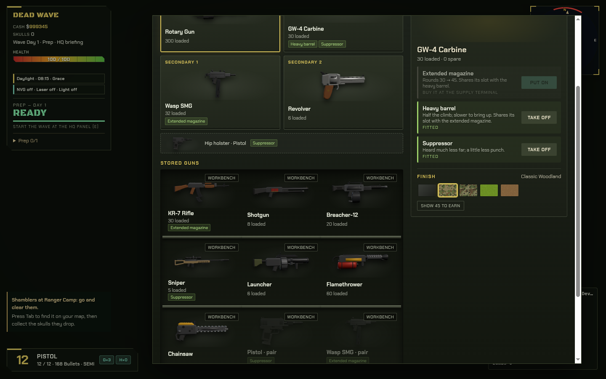
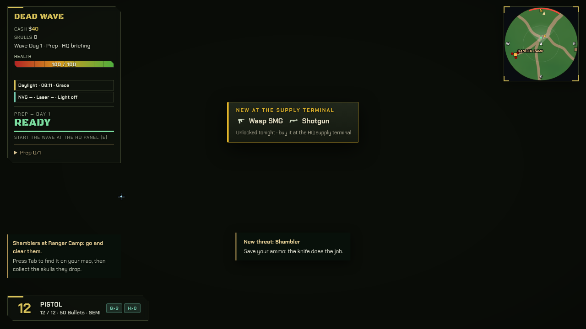
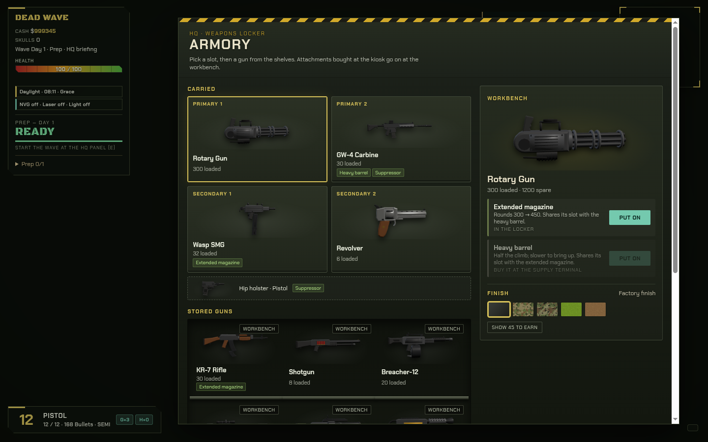
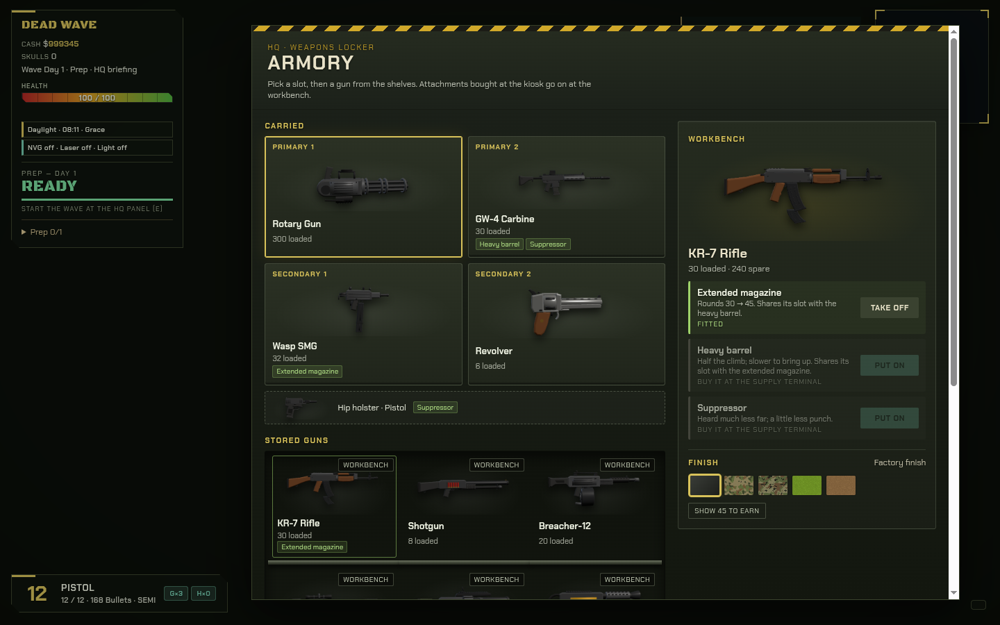
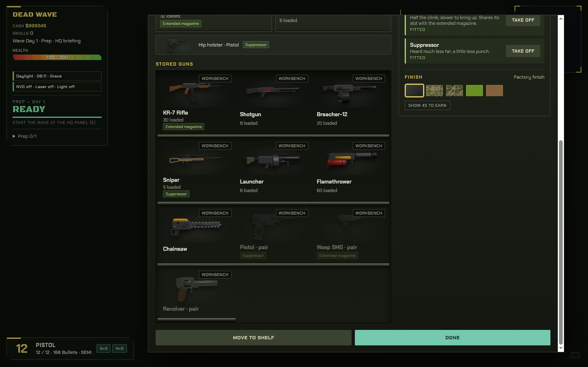
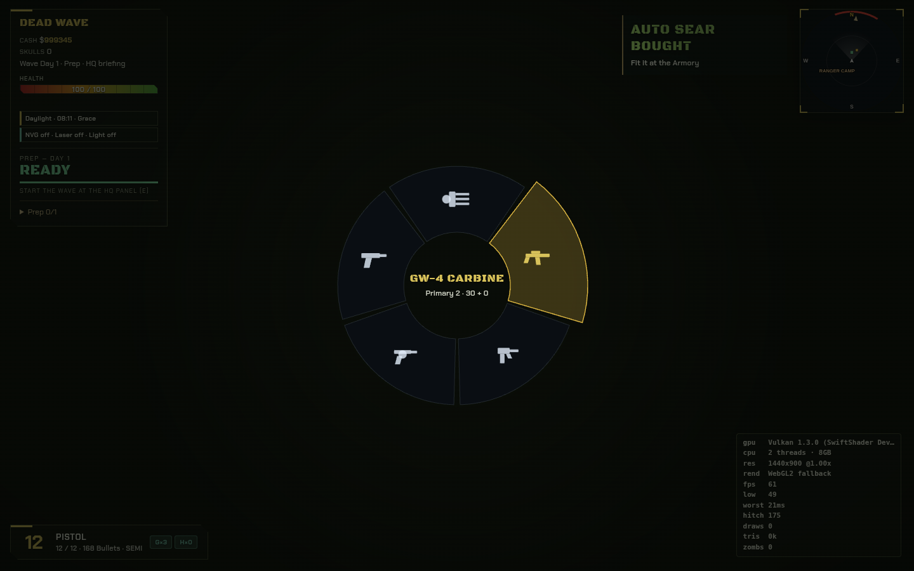
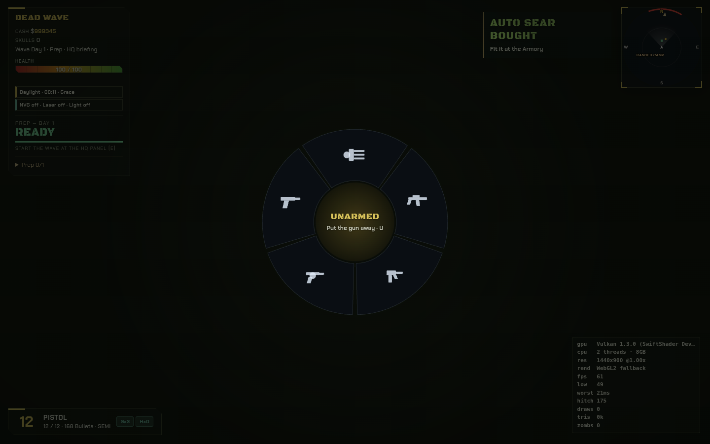
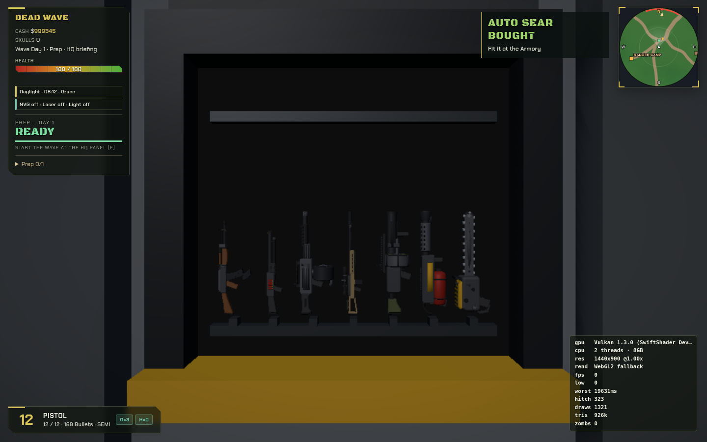

The Armory shows the real guns now, each wearing the attachments put on it. Attachments are bought at the kiosk and put on (or taken off) at the Armory's workbench. The weapon wheel never has more than five spaces: two primaries, two secondaries and the hip pistol. Let go in the middle of the wheel to put the gun away. Only the Bigtex shooter cheat shows every gun. Since v2 (CL-114) a gun's camo is chosen at the workbench (the CIF has no Guns tab), the supply terminal lists only the guns in stock tonight, and on the night a gun arrives a short card says so. Your notes go in notes.md.







